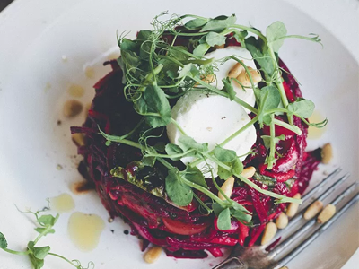

Ingredients

Directions
- Rinse the lettuce leaves and coarsely chop them. Place in a large mixing bowl. Peel beets and carrots and grate by hand or using the grating attachment on a food processor. Slice the onion and tomatoes very thinly. Chop the avocados and cilantro and place all prepared ingredients in the mixing bowl. Add olive oil, lime juice, salt and pepper and toss well, using your hands, so everything is coated in oil and lime and has a nice purple color.
- Scoop one fourth of the veggie mixture tight into a 4 inch (10 cm) wide x 2 inch (5 cm) high, round container or bowl. Place a serving plate on top of the container and carefully turn it upside down, remove the container slowly. Top the veggie tower with slices of goat cheese, toasted pine nuts and pea sprouts. Repeat three times. Enjoy!